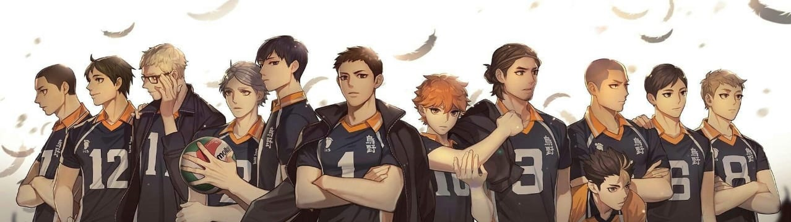

Shōyō Hinata is the main protagonist of the Haikyū!! series by Haruichi Furudate. For the majority of the series, Hinata was a first-year student at Karasuno High and one of the volleyball team's middle blockers.
Go somewhere
Tobio Kageyama is the deuteragonist of the Haikyū!! series. For the majority of the series, he is a first-year student at Karasuno High School and plays as the starting setter for the boys' volleyball club.
Go somewhere
Daichi Sawamura was a third-year student at Karasuno High. He was the captain and a starting wing spiker for the boys' volleyball team. During the period when the original coach, Ikkei Ukai, was hospitalized, he was one of the captains who had to act as the team's coach.
Go somewhere
Koushi Sugawara is the vice-captain of the volleyball club and a third-year student at Karasuno High School. Like Kageyama, he is a binder, replacing him at the right moments. Very kind and responsive. He understands well the feelings of all members of the club, for which everyone loves him. In 2018, he works as an elementary school teacher.
Go somewhere
Yū Nishinoya was a second-year student at Karasuno High. He was the libero for the boys' volleyball team and was referred to as "Karasuno's Guardian Deity" by his teammates, for his remarkable skills. After high school, Nishinoya retired from volleyball in favor of traveling the world.
Go somewhere
Tanaka has a shaved head with a bald patch on his forehead, and blue/gray eyes (golden brown in the manga) with a sharp gaze that leads to the misconception that he is a criminal. He has an average height and a muscular body. Often makes strange facial expressions in order to intimidate others, for which Daichi often scolds him. During his first year at Karasuno, Tanaka had short, fluffy hair dyed blonde.
Go somewhere
Ryunosuke Tanaka - He was previously a member of the Karasuno senior volleyball team. For most of the series, he was a second year and an underachiever on Team Karasuno and its promising ace. After graduating from high school, he became a personal trainer and married Kiyoko Shimizu.
Go somewhere
Asahi Azumane (Japanese: 東峰あずまね 旭あさひ Azumane Asahi) was a third-year student at Karasuno High. He was a wing spiker and its ace for the boys' volleyball club. As of 2018, he is working as an apparel designer in Tokyo.
Go somewhere
Tadashi Yamaguchi (山口忠, Yamaguchi Tadashi) is a first year at Karasuno High who plays as a middle blocker. He plays the role of "substitute" (planning serve) in the team. In his third year, he became team captain. He is currently a college student and plans to work for a home electronics company in Miyagi once he graduates.
Go somewhere